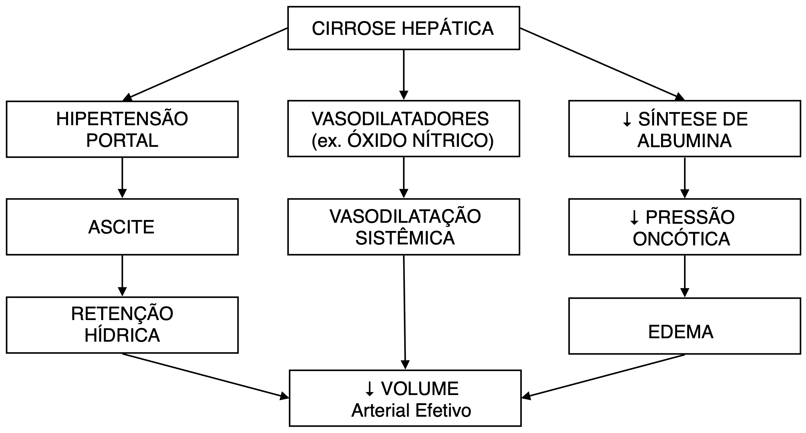
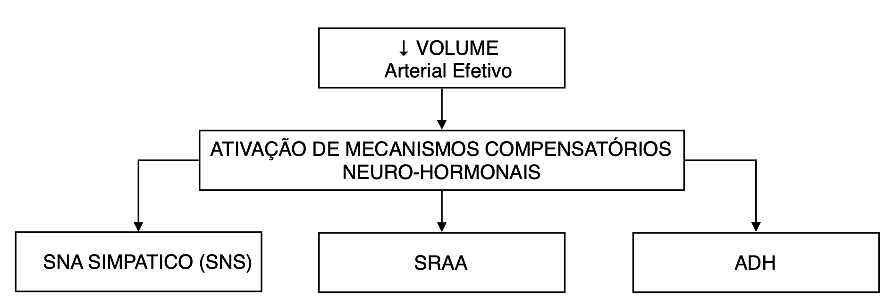
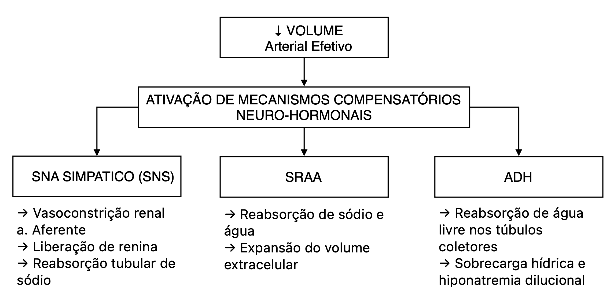

Raciocínio Clínico I - 1703107
Caso Clínico - Edema
Faculdade de Medicina de Ribeirão Preto - USP
2025-06-06
Caso Clínico
Identificação
José da Silva, 56 anos, masculino, pardo, divorciado, natural e procedente de Ribeirão Preto - SP, ensino fundamental incompleto, auxiliar de pedreiro, desempregado há 4 anos, sem religião.
Queixa Principal e Duração
“Estou com as pernas muito inchadas e a barriga crescendo” há cerca de 6 meses.
História da Moléstia Atual
Paciente refere início insidioso de edema em membros inferiores há cerca de 6 meses, inicialmente vespertino, bilateral e simétrico, com progressiva ascensão para região pretibial e posteriormente para coxas. Nos últimas dois meses, observou aumento importante do volume abdominal, associado à sensação de distensão, empachamento pós-prandial e redução do apetite. Refere ainda cansaço aos esforços moderados, sensação de peso abdominal e episódios esporádicos de náuseas. Nega dispneia, vômitos ou hematêmese.
Relata ainda que notou a pele mais amarelada nas últimas duas semanas. Nega prurido, colúria ou acolia fecal. Refere emagrecimento não quantificado no último ano, com perda de massa muscular perceptível.
Não relata dor abdominal significativa. Nega febre, calafrios, episódios de confusão mental ou sangramentos digestivos. Nega uso de diuréticos, laxantes ou outras medicações nos últimos meses.
Histórico alimentar: Refere padrão alimentar irregular, com longos períodos em jejum e refeições predominantemente à base de alimentos industrializados, como macarrão instantâneo, pães, embutidos e enlatados. Consumo escasso de frutas, verduras e proteínas de origem animal. Relata que frequentemente substitui refeições por consumo de bebida alcoólica, hábito que manteve por anos. Nos últimos meses, refere piora do apetite e redução progressiva da ingestão alimentar, principalmente por sensação precoce de plenitude abdominal.
Interrogatório dos Sistemas
- Pele e mucosas: Relata pele mais amarelada nas últimas semanas, sem prurido. Refere o aparecimento de pequenos vasos avermelhados na região do tórax, que não causam dor ou coceira, mas chamaram sua atenção pelo aspecto “parecido com uma teia”. Refere ainda o surgimento de manchas roxas nos braços e pernas, mesmo sem traumas aparentes. Nega outras lesões de pele ou sangramentos sangramentos de mucosa.
- Cardiovascular: Nega dor torácica, palpitações, síncope, ortopneia ou dispneia paroxística noturna.
- Respiratório: Nega tosse, expectoração, dispneia aos repouso ou sibilância. Refere discreta sensação de peso torácico quando deitado, mas sem necessidade de apoio com travesseiros adicionais.
- Gastrointestinal: Nega disfagia, dor abdominal significativa, hematêmese, acolia fecal, melena ou alterações no hábito intestinal. Refere fezes amolecidas, uma evacuação ao dia, porém sem diarreia franca.
- Geniturinário: Nega alteração subjetiva do volume e coloração urinários. Nega disúria, urgência, hematúria, espumúria ou edema escrotal.
- Neurológico: Nega cefaleia, alterações de consciência, convulsões, tremores ou confusão mental. Nega quedas ou alterações de equilíbrio. Nega alterações do sono.
- Endócrino e reprodutivo: Refere redução da libido. Nega polidipsia ou intolerância térmica.
- Hematológico: Nega sangramentos gengivais, epistaxe, ou episódios prévios de sangramento digestivo.
- Musculoesquelético: Refere perda de massa muscular e redução da força em membros inferiores. Nega dores articulares, rigidez matinal ou deformidades articulares.
- Psiquiátrico: Nega alterações de humor, ansiedade e alucinações.
Antecedentes Pessoais e Patológicos
- Doenças prévias: diagnóstico clínico de “gordura no fígado” feito há 5 anos, sem investigação complementar. Relata dois episódios compatíveis com icterícia autolimitada nos últimos dois anos. Nega outros diagnósticos de doenças crônicas.
- Uso de medicamentos: eventualmente usa dipirona por conta própria. Nega medicamentos de uso contínuo.
- Internações: uma internação hospitalar há 1 ano por “vômitos com sangue”, tratado com transfusão e sonda nasogástrica.
- Alergias: não referidas.
- Cirurgias: não referidas.
Antecedentes Familiares
- Pai falecido por “problemas no fígado”; mãe hipertensa e diabética.
- Sem história familiar conhecida de doenças hepáticas hereditárias.
Hábitos de Vida
- Nega prática de atividade física.
- Mora sozinho, em habitação de alvenaria com acesso à água tratada e rede de esgoto.
- Baixo suporte social e ausência de rede de apoio.
- Etanol: ingestão diária de 1 a 1,5 litro de cachaça/dia por mais de 25 anos, com interrupções breves.
- Tabagismo: ex-tabagista, 20 maços/ano, parou há 3 anos.
Exame Físico
Estado geral: paciente em regular estado geral, alerta, consciente e orientado em tempo e espaço.
Pele e mucosas: descorado (+/4+), ictérico (1+/4+), hidratado, acianótico. Presença de aranhas vasculares em região torácica superior, além de equimoses em braços e pernas. Sem outras lesões cutâneas, rash ou petéquias. Dentes em mal estado de conservação e higiente. Mucosas orais sem úlceras ou lesões.
Sinais vitais: PA: 100/64 mmHg. FC: 88 bpm. FR: 18 irpm. Temp: 36,5ºC. SpO₂: 97% em ar ambiente
Peso: 68 kg (peso usual relatado: 75 kg), altura: 1,72 m, IMC: 22,98 kg/m², Circunferência da panturrilha 29 cm.
Cabeça e pescoço: Sem linfadenomegalias palpáveis
Aparelho cardiovascular: Ritmo cardíaco regular em dois tempos. Bulhas normofonéticas sem sopros. Turgência jugular não visível em repouso. Refluxo hepatojugular ausente.
Aparelho respiratório: Expansibilidade preservada. Murmúrio vesicular presente e simétrico. Submacicez em bases, com redução do MV bilateralmente
Abdome: Abdome globoso, flancos abaulados, presença de circulação colateral em região periumbilical, sem sinal de Cruveilhier-Baumgarten audível. Na linha hemiclavicular direita, macicez percutível no 5º espaço intercostal direito, que se estende até 2 cm abaixo do rebordo costal direito. Hepatimetria: 10 cm na linha hemiclavicular direita. Fígado palpável à inspiração profunda, com bordas rombas, superfície irregular e consistência endurecida, indolor à palpação. Ascite moderada, com macicez móvel à percussão e sinal de piparote presente. Sem dor à palpação profunda. Sem massas ou visceromegalias.
Sistema geniturinário: Ginecomastia bilateral e atrofia testicular. Sem edema escrotal.
Extremidades: Edema 3+/4+ em membros inferiores, simétrico, com cacifo até joelhos.
Extremidades: Edema 3+/4+ em membros inferiores, bilateral e simétrico, com cacifo indolor até a região infrapatelar. Não há sinais inflamatórios locais, varizes, hiperpigmentação ou alterações tróficas. Panturrilhas sem empastamento. Pulsos periféricos presentes, cheios e simétricos.
Sistema nervoso: Flapping ausente.
Diagnósticos Sindrômicos
Diagnósticos Sindrômicos
- Síndrome edemigênica crônica: caracterizada por edema periférico bilateral e simétrico (MMII) e ascite moderada.
- Síndrome hepatocelular crônica: icterícia, aranhas vasculares, ginecomastia, atrofia testicular, emagrecimento, equimoses.
- Síndrome de hipertensão portal: ascite, circulação colateral abdominal e possível episódio anterior de sangramento digestivo alto (vômitos com sangue).
- Síndrome da desnutrição proteico-calórica: perda ponderal, redução da massa muscular, alimentação pobre em proteínas e calorias, IMC limítrofe e circunferência de panturrilha reduzida.
- Síndrome funcional social: ausência de rede de apoio, desemprego.
Diagnóstico Etiológico, Anatômico e Funcional (DEAF)
Diagnóstico Etiológico
Cirrose hepática de provável etiologia alcoólica, considerando o consumo crônico e intenso de etanol (>25 anos, 1–1,5 litro de cachaça/dia), histórico familiar sugestivo, episódios prévios compatíveis com icterícia, e ausência de outras causas infecciosas, metabólicas ou autoimunes conhecidas.
Diagnóstico Anatômico
Doença hepática crônica com descompensação clínica caracterizada por ascite e sinais de insuficiência hepática, além de sinais de hipertensão portal.
Diagnóstico Funcional
Síndrome edemigênica de origem hepática, mediada por hipoalbuminemia, vasodilatação esplâncnica, ativação neuro-hormonal (SRAA, ADH) e hipertensão portal. Paciente em estado funcional comprometido, com perda ponderal significativa, sarcopenia, hipoatividade e restrição da capacidade física para o trabalho.
Exames Complementares
Exames Laboratoriais
| Exame | Valor | Referência / Comentário |
|---|---|---|
| Creatinina (mg/dL) | 0.54 | Normal |
| Ureia (mg/dL) | 19 | Normal |
| Bilirrubina T / D (mg/dL) | 3 / 2.1 | Elevada |
| Albumina (g/dL) | 2.94 | Reduzida |
| TP/INR | 1.5 | Prolongado |
| Gama GT (11–50 U/L) | 67.1 | Elevada |
| Fosfatase Alcalina (65–300) | 136.9 | Normal |
| TGO (AST) (até 38 U/L) | 52.5 | Elevada |
| TGP (ALT) (até 41 U/L) | 31.9 | Normal |
| Hemoglobina (g/dL) | 11.2 | Leve anemia |
| Leucócitos (/mm³) | 4600 | Normal |
| Plaquetas (/mm³) | 112.000 | Plaquetopenia |
| Sódio sérico (mEq/L) | 131 | Hiponatremia dilucional |
| Potássio sérico (mEq/L) | 3.8 | Normal |
| Exame | Resultado |
|---|---|
| ECG | Ritmo sinusal, sem sinais de sobrecarga |
| EAS (exame de urina tipo I) | Sem proteinúria, sem hematúria, sem alterações |
Análise do Líquido Ascítico
| Parâmetro | Resultado | Comentário |
|---|---|---|
| Aspecto | Amarelo citrino | Consistente com transudato |
| Contagem celular | 90 céls/mm³ | Sem critério para PBE (PMN < 250) |
| Albumina no líquido (g/dL) | 0.8 | Para cálculo do GASA |
| Proteínas totais (g/dL) | 1.2 | Baixa – sugere ascite por hipertensão portal |
| Cultura | Negativa | Sem crescimento bacteriano |
| GASA (soro - ascite) | 2.14 g/dL | >1.1 → confirma hipertensão portal |
Sorologias Virais e Marcadores de Hepatopatia Autoimune
| Exame | Resultado | Interpretação / Comentário |
|---|---|---|
| HBsAg | Negativo | Exclui hepatite B ativa |
| Anti-HBc total | Negativo | Sem contato prévio com vírus B |
| Anti-HBs | Negativo | Sem imunidade por vacina ou infecção prévia |
| Anti-HCV | Negativo | Exclui exposição ao vírus da hepatite C |
| HIV 1/2 (4ª geração) | Negativo | Exclui imunodeficiência associada a hepatopatia |
| Anti-HTLV I/II | Negativo | Sem infecção retroviral associada |
Marcadores de Hepatopatia Autoimune
| Exame | Resultado | Interpretação / Comentário |
|---|---|---|
| ANA (fator antinuclear) | Negativo | Exame de triagem para hepatite autoimune tipo 1 |
| Anti-músculo liso (ASMA) | Negativo | Associado à hepatite autoimune tipo 1 |
| Anti-LKM1 | Negativo | Hepatite autoimune tipo 2 (mais comum em crianças) |
| Anti-mitocôndria (AMA) | Negativo | Marcador de cirrose biliar primária |
| IgG sérica | Normal | Hiper-IgG comum na hepatite autoimune (quando presente) |
Escore MELD-Na
MELD-Na = 18
- Calculado com:
Bilirrubina = 3.0 mg/dL
Creatinina = 0.54 mg/dL
INR = 1.5
Sódio = 131 mEq/L
Interpretação: risco moderado de mortalidade em 90 dias; considerar avaliação ambulatorial para transplante hepático.
Classificação de Child-Pugh
Estratificação clínica de gravidade da cirrose hepática. Objetivo: Avaliar a função hepática e classificar o risco de complicações e mortalidade.
| Parâmetro | 1 ponto | 2 pontos | 3 pontos |
|---|---|---|---|
| Bilirrubina | < 2 mg/dL | 2–3 mg/dL | > 3 mg/dL |
| Albumina | > 3.5 g/dL | 2.8–3.5 g/dL | < 2.8 g/dL |
| INR | < 1.7 | 1.7–2.3 | > 2.3 |
| Ascite | Ausente | Leve / controlada | Moderada a intensa |
| Encefalopatia | Ausente | Grau I–II | Grau III–IV |
Total = 9 pontos → Classe B: cirrose descompensada com função hepática moderadamente comprometida.
| Classe | Pontuação total | Sobrevida em 1 ano (aprox.) |
|---|---|---|
| Classe A | 5–6 pontos | > 85% |
| Classe B | 7–9 pontos | ~ 60–80% |
| Classe C | 10–15 pontos | < 45% |
Forças de Starling
\[ Fluxo = Kf (ΔPc – Δπc) \qquad(1)\]

Figure 1: Forças que controlam o fluxo de fluido no leito capilar. Pc - pressão hidrostática capilar; πc - pressão oncótica capilar; Kf - coeficiente de filtração; ∆p e ∆π - diferença arteriovenosa da pressão hidrostática e oncótica.
Fisiopatologia do Edema na Cirrose Hepática
1. Fibrose Hepática e Hipertensão Portal
Na cirrose, o tecido hepático normal é gradualmente substituído por tecido fibroso. Essa fibrose altera a arquitetura hepática e aumenta a resistência ao fluxo sanguíneo na veia porta, levando à hipertensão portal. Como consequência:
- O sangue se acumula nos vasos que drenam para o sistema porta.
- Há aumento da pressão nos capilares esplâncnicos e intestinais.
- Isso favorece o extravasamento de líquido para a cavidade abdominal, formando ascite.
2. Hipoproteinemia (Hipoalbuminemia)
O fígado fibrosado tem capacidade reduzida de sintetizar albumina, principal proteína responsável pela manutenção da pressão oncótica plasmática. A redução da albumina causa:
- Diminuição da pressão oncótica intravascular.
- Maior propensão ao extravasamento de líquido para o interstício.
- Desenvolvimento de edema periférico.
3. Vasodilatação Sistêmica e Redução do Volume Circulante Efetivo
Na cirrose ocorre vasodilatação sistêmica, especialmente no território esplâncnico, causada por substâncias vasodilatadoras como o óxido nítrico (NO). Esse processo leva a:
- Redução da resistência vascular sistêmica.
- Queda do volume arterial efetivo percebido pelo organismo.
- Ativação de mecanismos compensatórios para manter a perfusão tecidual.
Ativação de Mecanismos compensatórios Neuro-Hormonais
a) Sistema Nervoso Simpático (SNS)
aferência: barorreceptores detectam hipovolemia arterial efetiva (devido à vasodilatação esplâncnica).
eferências:
- A norepinefrina liberada pelas termina√ß√µes simpáticas estimula receptores ùõº‚ÇÅ-adren√©rgicos, causando vasoconstri√ß√£o renal, principalmente da arter√≠ola aferente → isso reduz a taxa de filtra√ß√£o glomerular (TFG), contribuindo para a preserva√ß√£o de s√≥dio e água pelo organismo.
- Estimula a liberação de renina por meio de receptores β₁-adrenérgicos nas células justaglomerulares → ativa o sistema renina-angiotensina-aldosterona (SRAA) → promove retenção de sódio e água.
- Aumenta a reabsorção tubular de sódio no túbulo proximal por meio de efeitos adrenérgicos diretos.
b) Sistema Renina-Angiotensina-Aldosterona (SRAA)
- Gatilhos:
- Ativação do sistema nervoso simpático via receptores β₁-adrenérgicos nas células justaglomerulares.
- Redução da perfusão renal (pressão de perfusão diminuída nas arteríolas aferentes).
- Diminuição da concentração de sódio no túbulo distal (detectada pela mácula densa).
- Efeitos:
- Aumenta a reabsorção de sódio e água nos túbulos renais.
- Promove retenção volêmica e expansão do fluido extracelular.
c) Hormônio Antidiurético (ADH)
- Gatilhos:
- Percepção de hipovolemia arterial efetiva por barorreceptores de alta pressão (aórticos e carotídeos), mesmo na presença de volume extracelular total aumentado.
- Aumento da osmolalidade plasmática, embora na cirrose o principal estímulo seja não osmótico (hipoperfusão).
- Efeitos:
- Atua nos túbulos coletores renais, promovendo a reabsorção de água livre via canais de aquaporina-2.
- Contribui para a sobrecarga hídrica e agrava a hiponatremia dilucional.
5. Consequências Finais
A combinação de:
- Aumento da pressão hidrostática (hipertensão portal),
- Redução da pressão oncótica (hipoalbuminemia),
- Retenção de sódio e água (ativação do SRAA, SNS e ADH),
- E vasodilatação sistêmica (óxido nítrico)
leva à formação de ascite e edema periférico.
6. Ciclo Vicioso
O extravasamento contínuo de líquido piora a perfusão renal, perpetuando a ativação neuro-hormonal e agravando o quadro de retenção hídrica. Assim, estabelece-se um ciclo vicioso que sustenta e piora o edema na cirrose hepática.
Mecanismos compensatórios neuro-hormonais
Referências
José Baddini Martinez, Márcio Dantas, Júlio César Voltarelli. Semiologia geral e especializada. 2ª ed. Ed. dos Autores, 2024.
Lindor, K.D. Pathogenesis of ascites in patients with cirrhosis. Uptodate, 2023.
Costanzo, L. S. Fisiologia. 7ª edição. Elsevier, 2020.